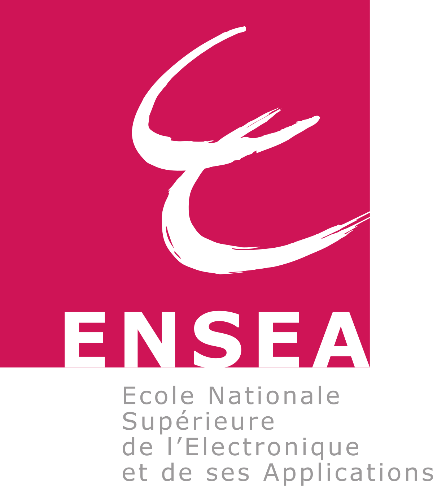

CV: I am a master's student in Telecommunication Engineering at Politecnico di Milano, doing my thesis in the BONSAI Lab (DEIB) with Qiaolun Zhang and Massimo Tornatore.
My thesis is about AI training that spans several datacenters. When GPUs in different sites train one model, their collective communication has to cross a wide-area network whose free capacity keeps changing. I built a four-GPU testbed to see what happens when the collective schedule and the WAN paths are adapted together, and wrote the runtime code that stops the two from getting in each other's way.
From September 2025 to January 2026 I was an Erasmus+ exchange student at ENSEA in Cergy, France, taking courses in networks, wireless communications and security.
I did my B.Sc. in Electronic Information Engineering at Beijing Institute of Technology, where my undergraduate thesis, supervised by Prof. Qin Zhang, simulated synchronization and distributed beamforming in wireless ad hoc networks. After graduating, I worked in industry as a software engineer on carrier-grade network software, mainly packet forwarding and IPsec in C, before coming back to study for my master's.
Outside my studies I like to travel, and I keep a map of the places I have been.
Research Interests
- Networking for distributed AI: how collective communication libraries, network paths and runtime control interact in multi-GPU and cross-datacenter training.
- Wireless communications and signal processing: estimation and detection, adaptive filtering, multi-antenna systems, and radio access networks controlled from measurements, as in O-RAN.
- Experimental network evaluation: testbeds where bandwidth, delay and background traffic are under control, and where every result can be traced back to the configuration that produced it.
- End-to-end energy modeling: how much energy a distributed AI service uses across radio, transport and computing, and models that still hold when resources are shared and the load changes.
News
- : Published an overview of my thesis testbed on GitHub, with the setup and the main results.
- : Our testbed paper on cross-datacenter training was accepted at INET4AI 2026, co-located with ACM CoNEXT 2026 (details).
- : Submitted the paper to INET4AI 2026.
Research
The testbed runs real PyTorch FSDP training on four NVIDIA P100 GPUs, split into two emulated datacenters. Between them is a multipath WAN built with Mininet and Open vSwitch, where I set the bandwidth, delay and background traffic of every path. The GPUs talk through NCCL/MSCCL over RoCEv2 RDMA.
Two controls run during training. The fast one moves single collective channels to a less loaded WAN path; for this I patched NCCL so that each channel uses its own RoCEv2 source port, which the routers can match. The slow one generates a new All-Gather schedule and switches all ranks to it at the same training step. When both run, a path change during a schedule switch can stall the collective, so an interlock holds path changes back until the switch is done.
In the workshop paper, using both controls cut All-Gather latency by 34.7% against a fixed baseline. In the thesis I extended the work to Reduce-Scatter and to the full training step: giving the slow links fewer Reduce-Scatter chunks halved its time, and under replayed capacity limits the training step became about 20% shorter.
Publications
Selected Projects
Education
- Politecnico di Milano

ENSEA- Beijing Institute of Technology
Travel
I keep this map as a record of the places I have visited.